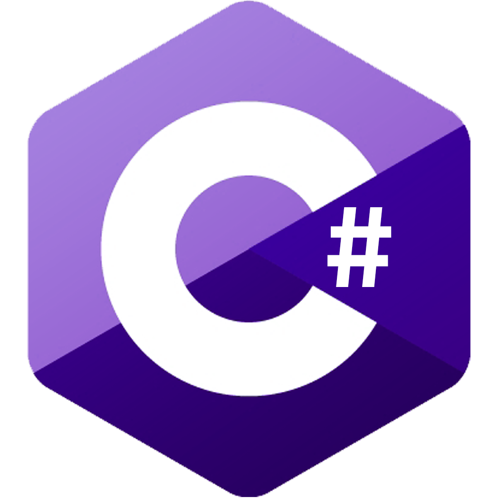
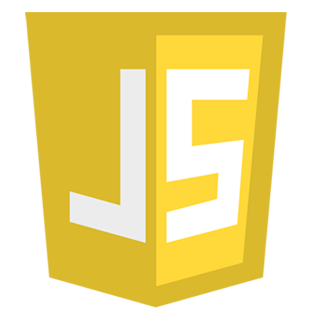
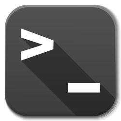

Stryker Buffington
As a software engineer/game developer with a passion for the intersection of immersive virtual reality, machine learning, and AI, I am dedicated to creating innovative solutions that push the boundaries of what is possible in these fields. With a strong background in programming and a deep understanding of the latest technologies, I am well-equipped to tackle complex projects and deliver high-quality results. Whether it's developing cutting-edge VR experiences or building intelligent systems using machine learning and AI, I am excited to bring my skills and expertise to any project I work on.
Tech Demos
AEPsych VR Throw Optimizer
AEPsych (short for Adaptive Experimentation in Psychophysics) is an open-source human-in-the-loop experimentation framework that I contributed a Unity integration to during my time as a VR Prototyper at Meta. I made the throw optimizer to demonstrate AEPsych’s continuous outcome model capabilities. AEPsych's continuous models can find parameters that optimize performance as well as preferences: here, I optimize a controller-based VR throw interaction to maximize throw accuracy. Video Summary and playable build here.
Role: Project Proposal, Unity Client API, Gameplay Programmer
Machine Learning Shopping Simulator
Computer software has long been used to simulate human behavior. In this project, we seek to create a machine learning Agent that simulates a shopper in a grocery store to assess the effectiveness of store layouts in regards to increasing social distancing compliance. We create a virtual reality environment to gather data on real human interaction as a demonstration to a generative adversarial machine learning (GAIL) Agent. Ultimately we create a more realistic and functional simulation using a pure reinforcement learning approach. Source Code available here.
Role: Project Proposal, VR Game Programmer, ML Engineer
VR Tower Defense
VR Tower Defense was a game prototype developed as a class project for UCSC's Winter 2020 Game AI class. The goal for the project was to create a game that reads your stress levels during gameplay through Biofeedback sensors, and modifies the game environment in response. We achieved this by collecting Galvanic Skin Repsonse and Heart Rate data during gameplay, and streaming it into Unity as parameters for a Stress Controller State Machine. The source code is available here.
Role: Project Proposal, Producer, Lead Gameplay Programmer, Biofeedback Engineer
Games
Re-Pair
Click the image to play!
Re-Pair is a story-driven 2D platformer puzzle game, in which the player manipulates time in order to save their lost lover. The Aesthetic goal of this game was to make the player feel puzzled, and force them to think outside the box. Source code is available here.
Role: Project Proposal, Producer, Sole Gameplay Programmer.
HenHop
Click the image to play!
Hen Hop is an infinite running game, where you play as a Hen and jump aross increasingly difficult automatically generated terrain. If you last long enough, you will witness a massive tonal shift as Nightmare Mode is activated. The game was developed in a small team of 3 as a class project for UCSC's Game Design Experience Class (CMPM 120). Source code is available here.
Role: Producer, Sole Gameplay Programmer.
CrispGameLib Rapid Prototypes
A key skill of any Software Engineer or Game Designer is the ability to rapidly generate and ideate on software prototypes based on external constraints. In UCSC's game prototyping class, I leveraged the JavaScript-based arcade-style game engine CrispGameLib to lead agile teams of 2-3 students to rapidly produce web mini games, given heavy constraints. For example, Ringout's prompt was "make a game that uses only one button". Here are some of the results!
Role: Project Proposal(s), Gameplay Programmer.
Work Experience
VR Research Prototyper
Worked alongside industry-leaders in virtual and mixed reality to push the boundaries of what's possible. I Prototyped 5 immersive VR experiences with novel HW/SW integrations, including machine learning adaptive experimentation, EMG biofeedback, prototype haptic hardware, etc. I also owned the full-stack of open-sourcing a Unity API for AEPsych including a C# front end, client/server protocols, active support (same-day bug fixes, comprehensive documentation), and publicity (8 interactive-demos, conference presentation).
Multisensory Virtual Reality Physical Therapy Research
I began my labwork with literature reviews on physical therapy applications of cutting edge multisensory technologies including olfactory and haptic feedback. As my skillset progressed, I began enriching existing long-term user studies through the application of modern game design principles to increase user adherence: gamified performance metrics, immersive environments, and a game economy backed by reinforcing feedback loops. Eventually, I directed a team of 3 undergrads to produce a stress-reactive horror VR game in Unity (requiring me to architect a GSR/heart rate data pipeline from proprietary software into Unity), then lead-authored and presented our findings at the 9th IEEE SeGAH Serious Games Conference.
Machine Learning Research Intern
In July of 2021, at the height of the COVID-19 pandemic, I was approached to be a machine learning intern in an effort to establish a collaboration between our California-based VR research lab and Japan’s National Institute of Advanced Industrial Science and Technology. During this internship, I proposed and drove a Deep Learning Research Project to optimize virtual store layouts by training virtual shopper ML Agents and quantifying social distancing adherence. I designed and implemented a reinforcement machine learning simulation in Unity, then compared performance to an imitation learning Unity ML Agent. To gain a data set to train the imitation learning agent, I devised a custom multiplayer VR shopping simulator and tasked volunteers to shop, while maintaining social distancing.
GetVirtual CoFounder and Project Manager
Co Founded the Nonprofit Organization GetVirtual, led by Toby Correy, with the goal of connecting Student Entrepreneurs with local businesses in need. Managed small teams to help local Santa Cruz Businesses extend their online presence, Scaled the company by onboarding new colleges and developing online curriculum, and personally delivered projects for Mavericks Fitness, Fybr Bamboo, and Kaijin MMA. Specialized in SEO, Social Media Marketing, Web Design, and Web Analytics.
Unreal Engine Instructor
Developed lesson plans and set curriculum goals to meet weekly deadlines for a classroom of ten students per week. Introduced students to new technologies and sparked creativity with insightful group discussions and adaptive individualized instruction.
Collection Digitization Intern
Independently cropped, applied taxonomic metadata, then uploaded insect collection whole-drawer images collected by Gigapan. Utilized the modern imaging software Inselect and reported on bottleneck inefficiencies in manual workflow to facilitate future continuation of work.
Education
University of California, Santa Cruz
GPA: 3.9
Scotts Valley High School
10-12 GPA: 4.51
Skills
-

-

-

-

-

- 
-

-

- 
-

- 
-

-

- Clear Communicator in Collaborative Environments
- Customer Discovery and Thorough Playtesting
- Feedback-oriented Iterative Design
- Tracking Project Progression through Remote Repositories
Interests
Beyond designing Virtual Reality Applications, I have a great interest in immersive virtual reality gaming, as well as traditional 2D gaming. To maximize my at-home immersion, I went as far as buying a VR Treadmill so that I could run across the plains of VR Skyrim, or sprint away from zombies in The Walking Dead VR. I've also spent my fair share of free time on competitive shooter games such as Destiny, Halo, and Call of Duty, and I'm completely enamored by Role-Playing Games, including Skyrim, Fallout, Baldurs Gate 3, etc.
Away from screens entirely, I enjoy Flowarts - check out my TikTok, bear the bruises of Circus Arts (aerial silks, trapeze, lyra), explore fashion, bring my adventure cat Salem places where no cat would dare venture (Trader Joes), get beat up in Jiu-Jitsu, hit the tennis courts with coworkers, and travel the evergreen state of Washington in pursuit of serenity within nature.
Awards & Certifications
- University of California, Santa Cruz - Dean's Honors - 4 consecutive quarters
- University of California, Santa Cruz - Merit Scholarship
- National Institute of Health Research Grant for VR Research
- International Baccalaureate Diploma for Multidisciplinary High School Coursework
- 3rd Place - Santa Cruz Elks Lodge Academic Scholarship winner
- 2st Place - Operating Engineers Academic Scholarship winner
- CPR certified and trained for emergency response situations